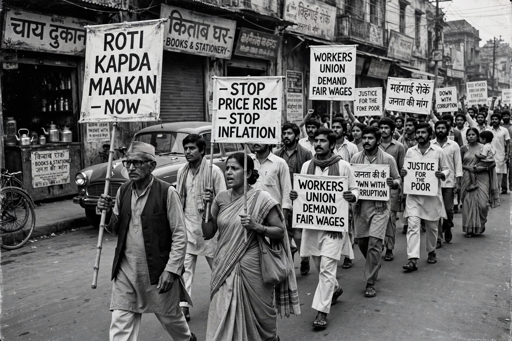

The Emergency (India)

The Emergency in India was a 21-month period from 25 June 1975 to 21 March 1977 during which Prime Minister Indira Gandhi had a state of emergency declared across the country under Article 352 of the Constitution on grounds of "internal disturbance". Elections were suspended, civil liberties curtailed, the press censored, and most political opponents imprisoned. It is widely regarded as the most controversial period in the history of independent India.
| Date | 25 June 1975 – 21 March 1977 |
|---|---|
| Location | India |
| Declared by | President Fakhruddin Ali Ahmed, on the advice of PM Indira Gandhi |
| Legal basis | Article 352, Constitution of India |
| Outcome | Ended 1977; Congress defeated in general election |
Background
The Emergency followed years of political and economic turmoil: war with Pakistan in 1971, a flood of refugees, drought, the oil crisis of 1973 and rising inflation had fuelled mass movements, notably Jayaprakash Narayan's "Total Revolution" campaign. On 12 June 1975, the Allahabad High Court convicted Indira Gandhi of electoral malpractice and disqualified her from office for six years. The Supreme Court granted only a conditional stay. As opposition demands for her resignation peaked, Gandhi advised the President to proclaim an emergency, which he did late on 25 June.
Rule under the Emergency
Under the proclamation, fundamental rights under Articles 19 and, controversially, 21 were suspended; the Maintenance of Internal Security Act (MISA) was used to detain over 100,000 people, including opposition leaders such as Jayaprakash Narayan, Morarji Desai, Atal Bihari Vajpayee and L. K. Advani. Newspapers were subjected to pre-censorship and electricity to Delhi's press district was cut on the first night. The 42nd Amendment of 1976 extensively rewrote the Constitution, curbing judicial review and extending Parliament's term from five to six years.
Gandhi announced a Twenty-Point Programme of economic reforms. Her younger son, Sanjay Gandhi, wielded extraordinary informal power, driving a controversial campaign of forced sterilisations — over six million procedures in 1976–77 alone — and slum demolitions in Delhi, including the Turkman Gate firing of April 1976.
End and aftermath
In January 1977 Gandhi unexpectedly called general elections, released political prisoners and lifted the Emergency on 21 March 1977. The Congress party was routed; the Janata Party coalition under Morarji Desai formed the first non-Congress government of India. The Shah Commission subsequently investigated Emergency excesses. The 44th Amendment (1978) replaced "internal disturbance" with "armed rebellion" as a ground for emergency and made Articles 20 and 21 non-suspendable.